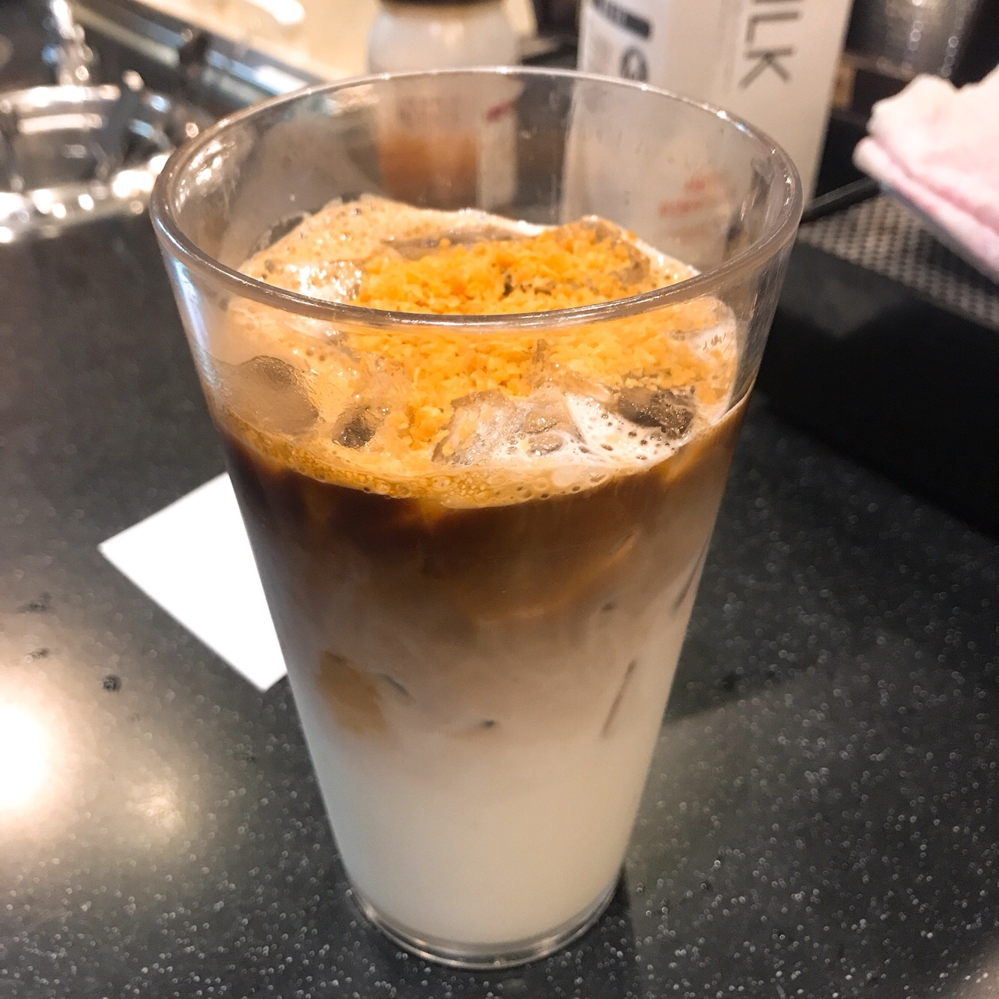

모카칩 프라페는 초코칩과 우유, 커피 파우더와 얼음을 넣고
갈아 만든 음료인데 개인적으로 샷을 추가해서 먹으면 맛있다.
사진은 평일 오전 언니랑 샷 추가해서 만든 건데 언니가 이상하게
초코소스를 올려서 모양이 좀 그렇지만 정말 맛있다.
샹그리아 에이드는 뱅쇼 시럽을 넣은 에이드로 위에 생자몽과 레몬이 올라간다.
투썸은 에이드에 사이다가 아닌 탄산수를 넣어 다른 카페보다 설탕이 덜
들어가는 편이다. 뱅쇼를 좋아한다면 선호할만한 음료다.
라임민트시럽에 샴페인시럽 조금 들어가고 위에 레몬 셔벗 아이스크림이랑 생레몬이 올라간다
레몬 셔벗 아이스크림이 레몬 껍질같은게 씹히고 진짜 상큼하니 맛있다
그냥 아이스크림이 아니라 셔벗이라 서벅 ..ㅎㅎ; 사각? 뭐라고 해야될지 모르겠는데 하튼 그런거라 모양잡아서 예쁘게 올리려면 신경써야한다.
모양 예쁘게 나갈때 희열 느낀다. 하지만 귀찮으니까 다들 아메리카노만 먹었으면..

제주 말차 프라페는 녹차 파우더가 아닌 말차 파우더가 들어간다.
연유와 우유를 넣어 얼음과 갈아만든 베이스와 섞어 먹는 음료인데
원래는 휘핑크림을 올려주지 않지만 추가해서 먹으면 맛있다. 하지만 다들 이 음료를 몰랐으면 좋겠다. 만들기 제일 귀찮으니까 ...

4월 중순쯤 나온 신메뉴 연유라떼는 원래 라떼에 연유만 부은것인데 위에 솔티드 캬라멜이 뿌려진다.
그냥 달달한 커피 먹고 싶을 때 가끔 먹는데 연유가 꽤 들어간 거 치고는 안 단편이다. 샷추가해서 먹으면 맛있다.
그냥 공차마냥 흑설탕 밀크티 이런거나 내주지 왜 신메뉴 이런거만 내놓는지 이해불가...
투썸의 쉐이크는 전부 아이스크림을 갈아서 만든다. 아이스크림 갈 때 아이스크림 통통 튀어서 블랜더기 붙잡고 있어야 하는게 제일 귀찮다. 다들 아메리카노만 먹었으면 좋겠다.
바닐라 초코 커피 세 종류가 있는데 커피 쉐이크는 진짜 샷을 내려서 샷이랑 아이스크림을 같이 갈아 만든다.
그리고 원래 레귤러 사이즈만 가능한데 내가 많이 먹고 싶어서 라지 사이즈에 먹었다. 캬라멜 소스도 원래 안뿌리는데 같이 일하는 언니가 뿌려 먹어 보자고 해서 먹어봤다.
레시피 메뉴얼이 왜 있는지 한번 더 깨닫는 하루가 되었다.
남들과 다른 방향으로 가는 것보다 남들이 닦아 놓은 길을 걸어가는 것이 편하다. 굳이 개척 하려고 하지말자.